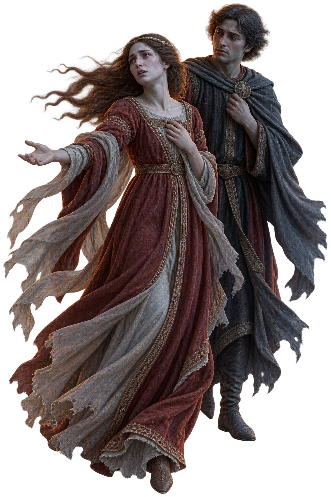

当前目标跟随维吉尔通过审判席
现场旁白
风眼只能维持片刻选择要观察的现场
观察不会给你答案，但会改变之后能够提出的问题。
你要怎样写下这份证词？
这不是给人物贴标签。你写下的句子，会决定哪些事实被带出地狱。

一份可被怀疑的手册 · 一段尚未闭合的证词
米诺斯的尾巴刚刚卷紧，下一批亡魂已经被抛进黑暗。维吉尔带你走向第二圈——在那里，爱情第一次以自己的名义开口。
选择一本手册。它会给你一种观察能力，也会悄悄遮住一种事实。
观察不会给你答案，但会改变之后能够提出的问题。
这不是给人物贴标签。你写下的句子，会决定哪些事实被带出地狱。